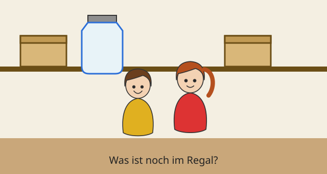

Was ist noch da? some, any und no
Mit einem KI-Tutor lernen
Ein KI-Tutor erklärt dir diese Seite und hilft dir bei den Aufgaben. Wähl deinen Assistenten:
Mit Claude öffnen Mit ChatGPT öffnen Mit Mistral Vibe öffnen
Du nutzt dein eigenes Konto beim Anbieter. Der Assistent ist kein Angebot von lernapps.net: lernapps liefert nur Inhalte und Aufgaben. Die Wahl gilt für alle Seiten, nur auf diesem Gerät.
Peter schaut ins Regal

Von links: Peter (gelbe Jacke) und Ellie (roter Pferdeschwanz). Sie schauen nach, was noch da ist.
Quelle: eigene Zeichnung. Lizenz: CC-BY-4.0.Mrs Parker fragt Peter nach den Zutaten. Peter sieht im Regal nach und sagt: „I have some eggs.“ Das heißt: „Ich habe ein paar Eier.“ some steht vor etwas, das da ist.
Das kannst du danach: Du sagst mit some, any und no, was da ist und was nicht, in Aussagen, Fragen und Verneinungen.
| Wort | Bedeutung |
|---|---|
| some | ein paar, etwas |
| any | irgendein, irgendwelche |
| no | kein |
| pen | Stift |
| bread | Brot |
| cheese | Käse |
| juice | Saft |
| rice | Reis |
| apple | Apfel |
| egg | Ei |
Aufgabe
Lösung
ein paar, etwas richtige Antwort
some heißt „ein paar“ oder „etwas“. Peter hat ein paar Eier, aber er sagt nicht genau, wie viele.
kein
„Kein“ heißt auf Englisch no. Peter hat ja Eier.
alle
„Alle“ ist ein anderes Wort. Peter sagt nur, dass er ein paar Eier hat.
some steht in Aussagen vor etwas, das da ist.
Das Etikett wechselt
Das Etikett auf der Kiste ändert sich mit dem Satz. In einer Aussage klebt some. In einer Frage und in einer Verneinung klebt any. In der Verneinung kann auch no stehen. Das gilt für Kisten (zählbar) und für Gläser (nicht zählbar).

Vier Etiketten für vier Sätze.
Quelle: eigene Zeichnung. Lizenz: CC-BY-4.0.| Satz | Etikett | Beispiel |
|---|---|---|
| Aussage | some | Mrs Parker has some milk. |
| Frage | any | Has Mrs Parker got any milk? |
| Verneinung | not any | Mrs Parker hasn't got any milk. |
| Verneinung | no | Mrs Parker has no milk. |
Merke
no ist schon verneint, darum steht dabei kein not: I have no milk, nicht „I haven't got no milk“. no und not any bedeuten dasselbe. In Fragen sagst du meistens any.
Übung
Aufgabe
Wähle das richtige Etikett.
Tipp
Welche Art von Satz ist es? Aussage, Frage oder Verneinung?
- Sophie hat ein paar Stifte. → Sophie has … pens.
- Hast du Saft? → Have you got … juice?
- Amir hat keinen Reis. → Amir hasn't got … rice.
- Peter hat keinen Käse. → Peter has … cheese.
Lösung
- Sophie has some pens.
- Have you got any juice?
- Amir hasn't got any rice.
- Peter has no cheese.
Aufgabe
Lösung
Richtige Antwort: Ich habe ein paar Äpfel. – some; Hast du Brot? – any; Ich habe keine Äpfel. (mit not) – not any; Ich habe keine Äpfel. (ohne not) – no
In Aussagen steht some, in Fragen any. In Verneinungen steht not any oder no.
Aufgabe
Schreibe den Satz auf Englisch.
Tipp
Aussage, Frage oder Verneinung? Danach wählst du das Etikett.
- Ellie hat ein paar Stifte.
- Hat Peter Brot?
- Amir hat keinen Käse.
Lösung
- Ellie has some pens. (auch richtig: Ellie has got some pens.)
- Has Peter got any bread? (auch richtig: Does Peter have any bread?)
- Amir hasn't got any cheese. (auch richtig: Amir has not got any cheese.; Amir has no cheese.)
Aufgabe
Lösung
Richtige Antwort: 1. Has, 2. Sophie, 3. got, 4. any, 5. juice?
Die Frage beginnt mit Has, dann kommt die Person, dann got, dann das Etikett any und zuletzt das Ding.
Aufgabe
Lösung
Richtige Antwort: Die Aussage stimmt nicht.
In einer Verneinung steht any, nicht some. Es heißt I haven't got any eggs.
Aufgabe
Hör zu und schreibe den ganzen Satz auf.
Tipp
Hör genau auf das Etikett vor dem Ding. Ist es some, any oder no?
- KI
- KI
- KI
Lösung
- Have you got any rice?
- Peter has some apples.
- Amir hasn't got any juice.
Selbst sagen und prüfen
Aufgabe
Hör zu, sprich nach und nimm dich auf. Vergleiche dann mit dem Original.
Tipp
Hör den Satz zuerst. Sprich dann langsam nach. Bei der Frage geht die Stimme am Ende nach oben.
- Ellie has no bread.KI
- Has Sophie got any pens?KI
- Mrs Parker has some eggs.KI
Zum Aufnehmen braucht diese Aufgabe JavaScript. Die Beispiele kannst du auch ohne anhören.
Lösung
- Ellie has no bread.
- Has Sophie got any pens?
- Mrs Parker has some eggs.
Offene Aufgabe
Du prüfst für Mrs Parker das Regal. Schreibe drei Sätze: eine Aussage mit some, eine Frage mit any und eine Verneinung (zum Beispiel: I have some cheese. Have you got any bread? I haven't got any rice).
Eine gute Antwort enthält:
Lösung
I have some apples. Have you got any juice? I have no eggs.
Wie es weitergeht
Peter hat im Regal einiges gefunden, aber nicht alles. Jemand hat Mrs Parkers Liste mitgenommen, aber wer? Auf der nächsten Seite lernst du somebody, anything und Co.